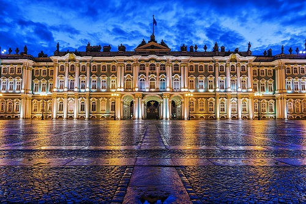
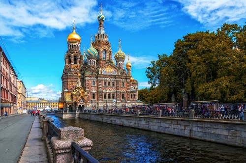
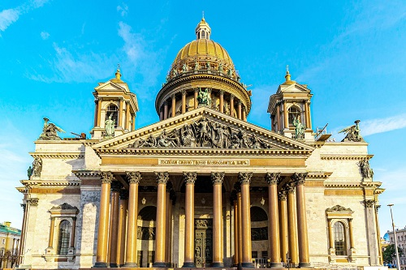
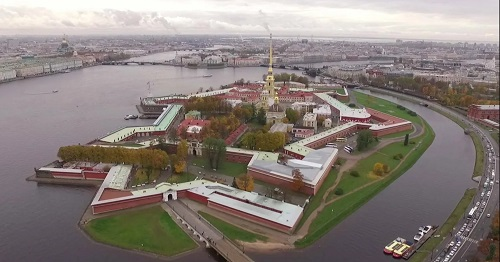
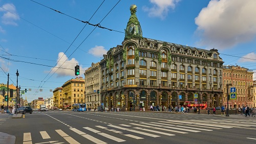

Наша команда
Прогулки по Санкт-Петербургу
Северная столица — один из самых красивых городов мира, среди его достопримечательностей множество уникальных памятников архитектуры. Вот наиболее известные места Петербурга, которые туристам стоит посетить в первую очередь.
Эрмитаж
{kind=link}
Обойти музей, входящий в десятку крупнейших в мире, не получится ни за один день, ни за два: в Эрмитаже более 365 залов, а количество экспонатов превышает три миллиона. Тем, кто приходит сюда впервые, лучше взять обзорный тур, чтобы не заблудиться в анфиладах и не пропустить самые известные достопримечательности.
Среди наиболее популярных экспозиций — Египетский зал, где можно посмотреть на саркофаги, мумии жрецов и другие артефакты, найденные при археологических раскопках, а также Большой тронный зал Зимнего дворца — реставраторы сумели точно воссоздать его дореволюционный облик, включая рисунок на паркете, узоры на потолке, обитое бархатом тронное место и мраморные колонны. В зале Леонардо да Винчи представлены два шедевра великого живописца — «Мадонна Бенуа» и «Мадонна Литта». Многие туристы приезжают в Эрмитаж только ради них.
Храм Спас-на-Крови
{kind=link}
Храм Воскресения Христова на крови, более известный как Спас-на-Крови, построен на том месте, где в результате покушения был смертельно ранен император Александр II. Церковь построена в русском стиле и отличается богатым декором: на западном фасаде выложены мозаики с гербами городов Российской империи, в отделке широко использован мрамор, гранит, эмаль, медь и позолота, разноцветные купола напоминают маковски собора Василия Блаженного. Внутренние интерьеры храма также выложены мозаикой — она создавалась по эскизам крупнейших российских художников и занимает площадь более 7 000 квадратных метров.
Исаакиевский собор
{kind=link}
Крупнейший православный храм Северной столицы входит в перечень главных достопримечательностей России и Санкт-Петербурга. С 1928 года ему присвоен статус музея. Исаакиевский собор считается шедевром архитектуры позднего классицизма. Здание украшают 350 скульптур на христианскую тематику, внутреннее убранство не менее впечатляюще — чего стоят только огромные малахитовые колонны, цветной витраж и мозаичные иконы. Под главным куполом на украшенной колоннами балюстраде располагается самая известная в Петербурге смотровая площадка: чтобы насладиться круговой панорамой исторического центра с высоты 43 метров, надо одолеть винтовую лестницу из 262 ступеней. Колоннада открыта в теплый сезон с 1 мая по 30 сентября.
Петропавловская крепость
{kind=link}
Петропавловская крепость стала той точкой, с которой началась история Санкт-Петербурга — первый камень сооружения заложили в 1703 году, эта же дата считается днем основания города. Мощеные закоулки Петропавловки и смотровая площадка с видом на Неву особенно популярны летом, когда под стенами крепости открывается пляж. В Петропавловской крепости есть несколько музеев, проводятся различные выставки. В Великокняжеской усыпальнице покоятся члены дома Романовых, а в Трубецком бастионе располагалась главная политическая тюрьма царской России.
Невский проспект
{kind=link}
Самая известная улица Северной столицы. Гуляя по проспекту и его окрестностям, можно любоваться историческими особняками — например, домом компании «Зингер» или домом Мертенса и огромными арочными окнами. На Невском расположено несколько важных достопримечательностей города: Казанский собор, Строгановский дворец авторства архитектора Франческо Растрелли, Адмиралтейство, а в двух шагах от него — Дворцовая площадь, Александровский сад и знаменитый Медный всадник.
Интересные факты о Санкт-Петербурге
Самый зеленый мегаполис. Петербург удивляет обилием деревьев и зелени на своих улицах. Здесь расположено более двухсот парков, скверов и садов. На каждого жителя города приходится в среднем 56 квадратных метров зеленых насаждений!
Рекордное количество мостов. Город может похвастаться наличием восьмисот мостов, тринадцать из которых являются разводными.
Культурная столица. Петербург называют так неспроста, он внесен в список всемирного наследия ЮНЕСКО. Связано это с тем, что здесь насчитывается более восьми тысяч исторических и архитектурных достопримечательностей.
Самое старое кафе. Первое в городе кафе «Палкин» открылось в 1785 году. И сегодня в нем можно выпить чашечку вкусного кофе.
Город трамваев. Длина трамвайных дорог Санкт – Петербурга составляет более шестисот километров. Этот показатель даже зафиксирован в мировой книге рекордов.
Самый странный памятник. Знаменитый Чижик-Пыжик, расположенный на набережной Фонтанки, был украден целых семь раз. Интересно, что каждый раз воры почему-то возвращали его на место.